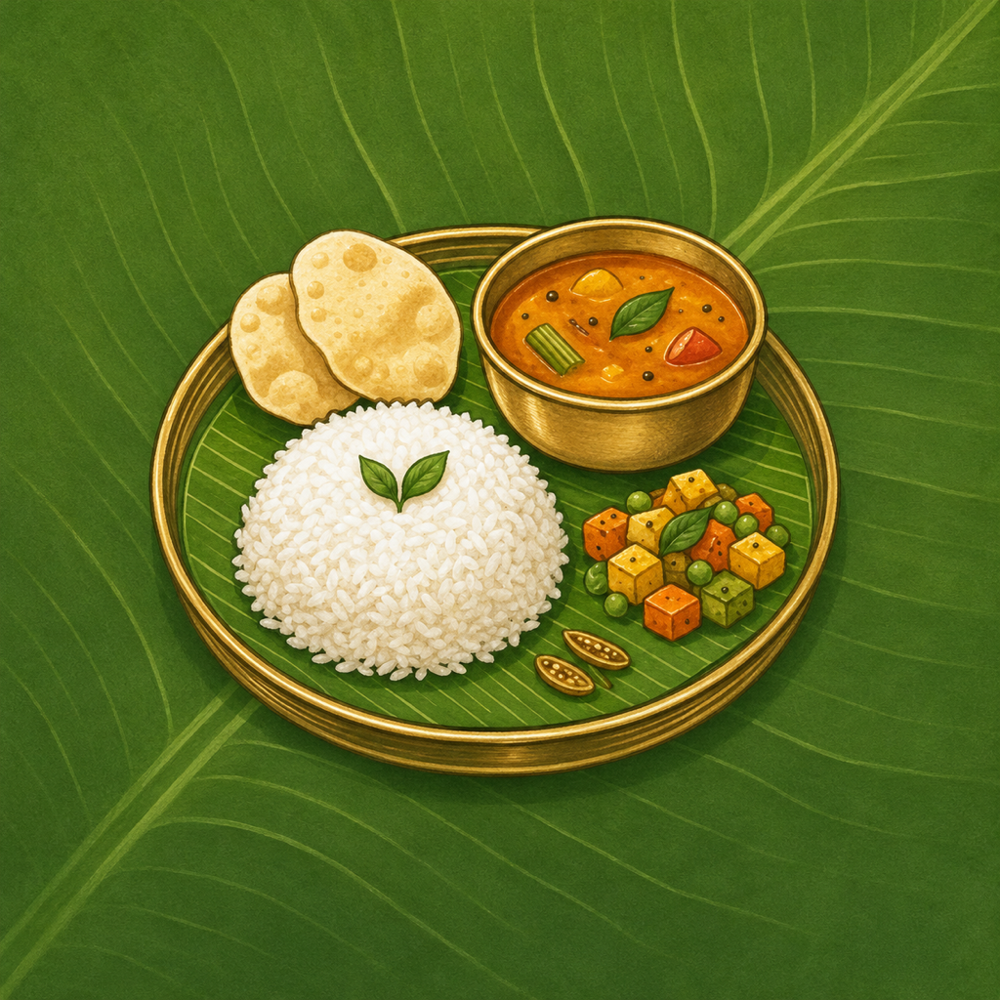

சாப்பாடு
தமிழில் சைவ சமையல் · Saapaadu by Malar Hari
இன்று என்ன சமைக்கலாம்?
201 சைவ சமையல்கள், தேவையான பொருட்கள், படிப்படியான செய்முறைகள் மற்றும் உணவு விளக்கப்படங்கள் — இணையம் இல்லாமலும் உங்கள் iPhone-இல்.
- தென்னிந்திய சுவைகளுடன் அன்றாட உணவுப் பரிந்துரைகள்.
- ஒவ்வொரு படியாகச் சமைக்க வழிகாட்டி, டைமர், பிறகு தொடரும் வசதி.
- வீட்டிலுள்ள பொருட்களுக்கேற்ற சமையல்களைத் தேடுங்கள்.
- வார உணவுகளைத் திட்டமிட்டு மளிகைப் பட்டியலை உருவாக்குங்கள்.
- பிடித்த சமையல்கள், தனிப்பட்ட குறிப்புகள், ஒளி / இருள் தோற்றங்கள்.
Everyday vegetarian cooking, in Tamil
Browse 201 vegetarian recipes with ingredients, illustrated dishes and clear cooking steps. Plan meals, match recipes to ingredients at home, combine compatible grocery quantities and keep your own recipe notes.
The app interface and recipes are in Tamil. Common English recipe and ingredient search terms are supported. Recipes and saved information work offline. No account, advertisements, subscriptions or in-app purchases.
For iPhone with iOS 17 or later. Nutrition figures are approximate estimates, not personalised medical advice. Food illustrations may differ from the finished dish.